8 Dados Tidy
8.1 Introdução
Neste capítulo, descreverei como é o formato de dados chamado tidy (arrumado), e quais são os fundamentos e operações da manipulação de dados. Falo como aplicá-las usando os pacotes “dplyr” e “tidyr”.
8.2 Importing
Não tem muito erro, tem que saber como são os formatos de arquivo que existem. Cada arquivo, a depender do seu tipo, tem configurações diferentes. Ex: um arquivo CSV pode ser separado por , ou ;, qual a planilha quista de um .xlsx. Esse tipo de configuração precisa ser passada para a função que lê o arquivo.
Também podemos estar interessados em:
- Pular linhas e colunas.
- Definir tipos das colunas.
- Especificar o que define strings (ex
'ou"), comentários (ex#), e valoresNA.
8.2.1 readr
O readr existe “to provide a fast and friendly way to read rectangular data from delimited files”.
O tidyverse também tem pacotes secundários para outros tipos de dados (.xlsx, .json, …), recomendo também estudar o readxl no mínimo. Muitos deles usam argumentos similares.
Veja:
- O tutorial.
- A cheatsheet.
Leia a documentação de:
8.2.2 Argumentos Importantes
Lembre-se de quais operações queremos poder fazer.
Podemos escolher o que selecionar: skip, n_max, col_select, skip_empty_rows.
Também é importante o “como” selecionar (parse):
-
col_types. Veja mais no artigo Column types. -
locale. Veja mais no artigo Locale. -
name_repair. -
quote,comment,na. -
trim_ws.
Exemplo 1:
data <-
"a,b,c,d
1,2,'A',na
3,4,'B',4
fonte:IBGE,,,"
read_delim(I(data))
#> # A tibble: 3 × 4
#> a b c d
#> <chr> <dbl> <chr> <chr>
#> 1 1 2 'A' na
#> 2 3 4 'B' 4
#> 3 fonte:IBGE NA NA NAExemplo 2:
data <-
"a,b,c,d
1,2,'A',na
3,4,'B',4
fonte:IBGE,,,"
read_delim(I(data),
col_types = list(c = col_factor()), #"nnfn"
col_select = c(b:d),
n_max = 2,
quote = "'", na = "na"
)
#> # A tibble: 2 × 3
#> b c d
#> <dbl> <fct> <dbl>
#> 1 2 A NA
#> 2 4 B 48.3 Wrangling
8.3.1 Tidy Data
Antes de falar sobre tidying, vamos falar sobre o que é um dataset tidy.
Para ciência de dados, será útil utilizar uma organização específica, chamada de “tidy dataset”. Três regras a definem:
- Cada variável deve ter sua própria coluna.
- Cada observação deve ter sua própria linha.
- Cada valor deve ter sua própria célula.

Quais os benefícios?
- A consistência de utilizar uma mesma organização, independente de qual, é muito útil, especialmente porque facilita entender as ferramentas que trabalharão com ela.
- A arrumação tidy é intuitiva, e é utilizada de maneira muito natural nas ferramentas, muitaz vezes vetorizadas, de visualização e modelagem.
8.3.2 Tidying
O processo de arrumar dados é o seguinte:
- Agora que já entendemos o que é tidy data, podemos adquirir a habilidade de olhar para um dataset e, sabendo onde queremos chegar, elencar quais são as alterações a serem feitas.
- Após elencar quais alterações devem ser feitas, é simples fazer a ponte de quais manipulações de dados você quer fazer – “subset linhas” e “separar colunas”.
- Por fim, só falta relembrar como é o código que aplica essa manipulação. Essa é a parte mais simples! É só voltar na aula passada, pesquisar na internet, ver no chat, ou perguntar para o seu amigo preferido!
Vamos tratar de um exemplo, que mostram como um dataset “não tidy” pode ser transformado em tidy. Começamos com:
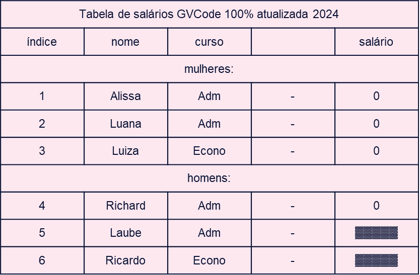
Vamos, sem ordem específica, elencar alterações para fazer.
Começe sempre definindo o que é uma observação. No nosso caso uma observação é definida pelo “nome” (Luana, Ricardo, etc.). Depois, faça as perguntas: “Cada coluna é uma variável? Cada linha é uma observação? Cada célula é um valor”. Se não, o que fazer?
8.3.2.1 Cada linha é uma observação?
Primeiro, por exemplo, podemos notar que a primeira linha é um cabeçalho, não uma observação:
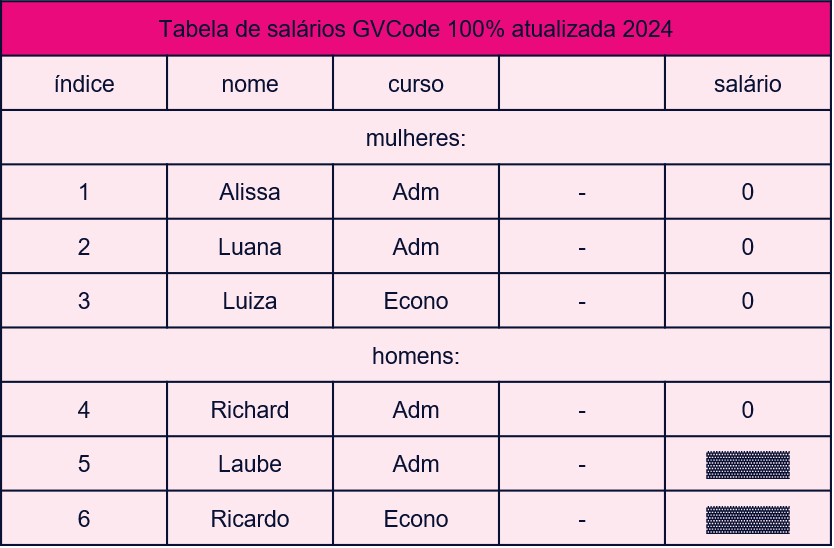
Depois, outras linhas são títulos de grupos de observações, também podem ser removidas. Se a informação do título for importante, poderíamos criar uma coluna para ela.
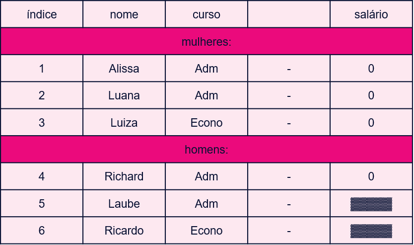
8.3.2.2 Cada coluna é uma variável?
A seguir, existe uma coluna meramente estética, que não é uma variável, e deve ser removida.
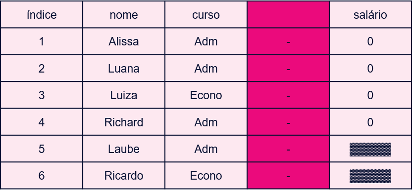
A primeira coluna pode ser considerada uma variável ‘inútil’, e ser removida:
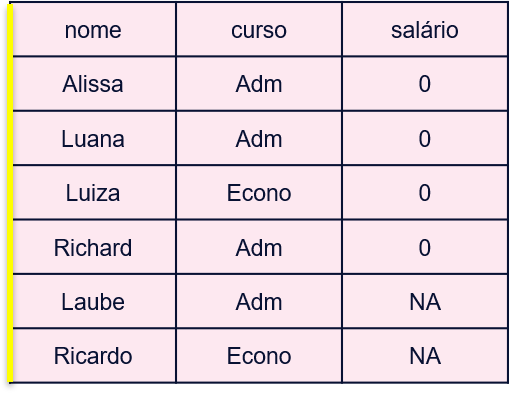
8.3.2.3 Cada célula é um valor?
Note que há dois valores faltantes na última coluna, células que não são valores. Devemos trocálos pelos valor NA.
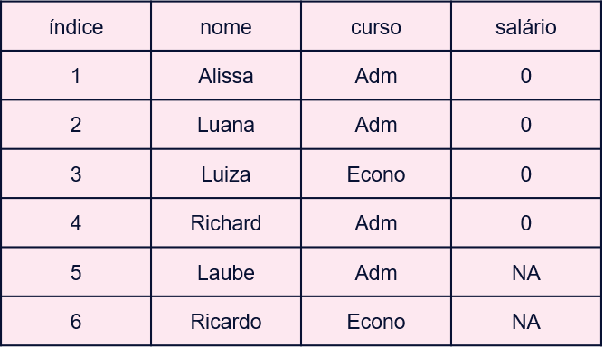
Tratar valores NA é um tema importante. Muitas vezes, as visualizações e modelagens a serem feitas com os dados não aceitam valores NA.
Podemos ‘chutar’ o valor, seguindo algum algorítmo, por exemplo, chutando a média:
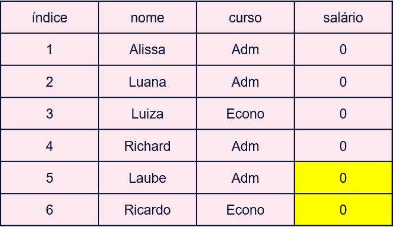
Por melhor que seja o algorítmo, note que sempre é um chute, que sempre incorre em um erro estatístico, podendo trazer viés para as próximas etapas. Muitas vezes, é mais adequado remover a observação, mas note que isso também pode desbalancear a amostra:
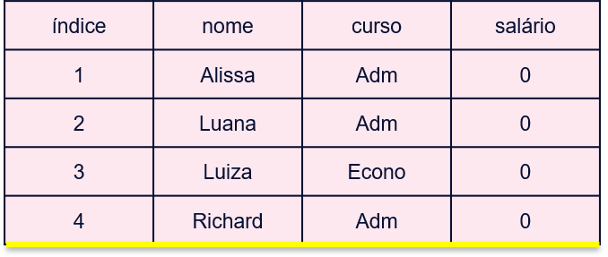
Com datasets mais ricos, as vezes podemos criar um modelo que preveja os valores faltantes com base no resto das variáveis:
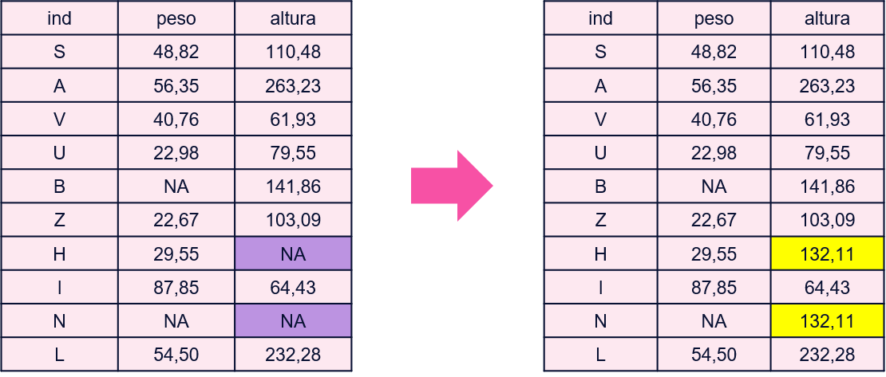
Com dados temporais, podemos usar a dinâmica temporal para prevê-los:
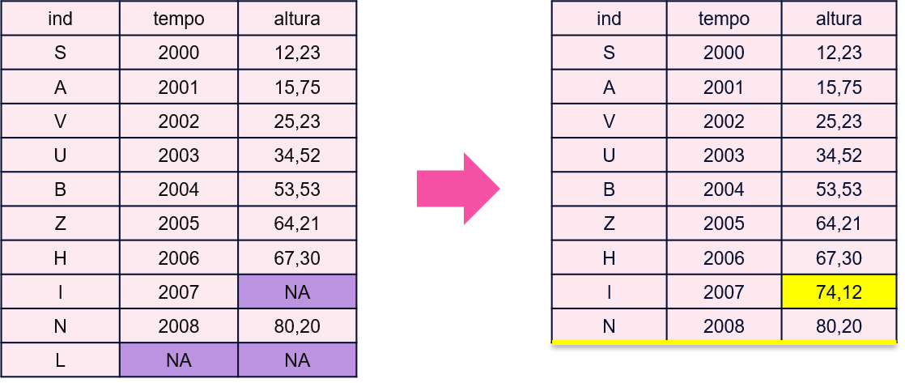
Porém, o primeiro passo sempre é buscar algum conhecimento institucional que ajude a entender o porque existem valores NA, e se algum deles na verdade pode ser substituido com certeza:
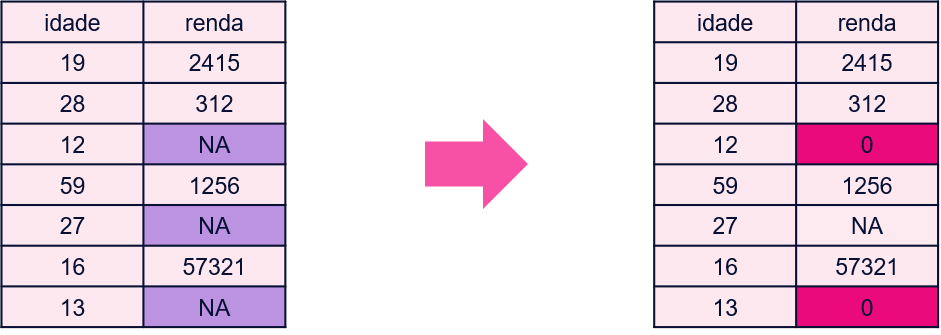
8.3.2.4 Pivoting
O exemplo acima foi simples, mas as vezes, é necessário realizar uma transformação mais complexa, que altera a forma do dataset. Elas são apresentadas aqui.
As vezes, uma coluna contem mais de uma variável ‘coladas’:
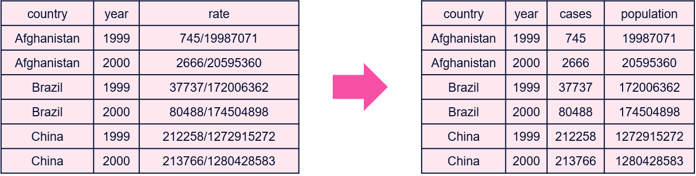
Outras vezes, uma observação está espalhada por mais de uma linha, e precisamos juntar essas linhas em uma só, ou pivotar a tabela para um formato mais largo:

A operação inversa ocorre quando uma variável está espalhada por mais de uma coluna, e precisamos pivotar a tabela para um formato mais longo:

Essas duas operações estão intimamente ligadas à definição de uma observação. No formato longo, uma observação é a combinação de country, year, e type; no formato largo, country e year apenas.
8.3.2.5 Merging
Por fim, as vezes precisamos unir datasets em um só. Por exemplo:
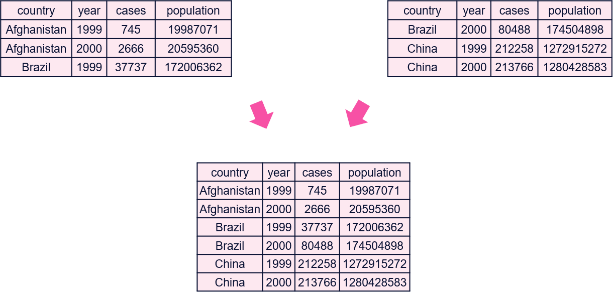
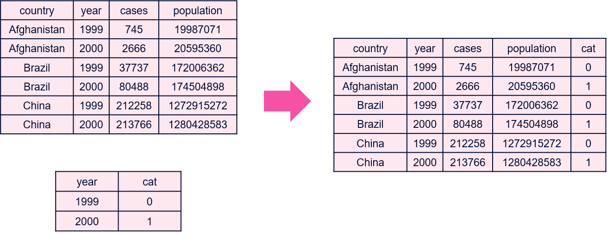
Existem vários tipos de merge/join:
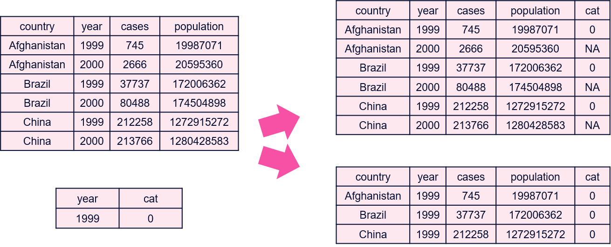
Os principais são:
- Left join: mantém todas as observações do dataset da esquerda, preenchendo com NA quando não existe no dataset da direita.
- Inner join: mantém apenas as observações que existem em ambos os datasets.
- Outer join: mantém todas as observações, preenchendo com NA quando não existe.
8.3.2.6 A Receita
Qual foi a receitinha de bolo que aprendemos? (hmm bolo 😋). Recebemos um dataset, e:
- Definimos o que é uma observação.
- Arrumar os dados para o formato data frame.
- Todas as colunas são homogêneas?
- Remover linhas “ruins”, converter valores.
- Todas as colunas são do mesmo tamanho?
- Remover linhas “ruins”.
- Todas as colunas são homogêneas?
- Arrumar os dados para o formato tidy.
- Toda coluna é uma variável?
- Remover colunas “ruins”.
- Separar/unir colunas colunas.
- Toda linha é uma observação?
- Quais são as variáveis que definem uma observação?
- Pivot e melt.
- Toda coluna é uma variável?
- Lidamos com dados NA.
- Transformar dados “ruins” em NA.
- Lidar com dados NA.
- Tenho mais de um dataset? Deixá-los tidy e então realizaram algum merge.
8.3.3 Transforming
Após arrumarmos um dataset, ainda aplicaremos transformações com base nas demandas da fase de visualização e modelagem.
- Manipular linhas.
- Sorting.
- Sampling.
- Filtrar observações.
- Transformar/criar colunas:
- Alterar a unidade de uma variável.
- Normalizar variáveis.
- Agrupar as categorias de uma variável categórica.
- Corrigir/formatar texto de variáveis string.
- Manipular datas.
- Criar novas colunas a partir de operações com múltiplas outras.
- Criar uma coluna para ajudar em um plot.
8.4 tidyr
Agora, estudaremos como essas operações são implementadas nos pacotes do tidyverse. Na minha opinião, o principal ponto positivo desses pacotes é o quão intuitivamente conseguimos agrupar suas funções nas caixinhas das operações descritas acima, e quão fáceis elas são de utilizar. É muito simples elencar a lista de transformações necessárias, e pedir para uma IA mapeá-las em funções do tidyr e dplyr.
Começaremos com o tidyr, que existe “to help you create tidy data”.
Veja:
- O tutorial.
- A cheatsheet.
Aqui, temos as caixinhas:
- Reshape (pivot)
- Separate/unite
- NA handling (+ complete)
- Outros: lists to dataframes (unnest)
8.4.1 Separate
df <- tibble(id = 1:3, x = c("m-123", "f-455", "f-123"))
df %>% separate_wider_delim(x, delim = "-", names = c("gender", "unit"))
df %>% separate_wider_position(x, c(gender = 1, 1, unit = 3))
df %>% separate_wider_regex(x, c(gender = ".", ".", unit = "\\d+"))
#> # A tibble: 3 × 3
#> id gender unit
#> <int> <chr> <chr>
#> 1 1 m 123
#> 2 2 f 455
#> 3 3 f 1238.4.2 NA Handling
df <- tibble(x = c(1, 2, NA), y = c("a", NA, "b"))
df %>% drop_na(x)
#> # A tibble: 2 × 2
#> x y
#> <dbl> <chr>
#> 1 1 a
#> 2 2 NA
df %>% replace_na(list(x = 0, y = "unknown"))
#> # A tibble: 3 × 2
#> x y
#> <dbl> <chr>
#> 1 1 a
#> 2 2 unknown
#> 3 0 b
df %>% fill(x, y)
#> # A tibble: 3 × 2
#> x y
#> <dbl> <chr>
#> 1 1 a
#> 2 2 a
#> 3 2 bComplete: explicitar valores faltantes
8.4.3 Reshape
Veja o artigo Pivoting.
8.5 dplyr
O dplyr é “a grammar of data manipulation, providing a consistent set of verbs that help you solve the most common data manipulation challenges”.
Veja:
- O tutorial.
- A cheatsheet.
Aqui, temos as caixinhas:
- Subset
- Operate
- Reorder
- Rename
- Combine
- Summarize
- E tudo isso com groups
8.5.1 Subset - Linhas
Casos especiais:
starwars %>% filter(!duplicated(mass))
starwars %>% distinct(mass, .keep_all = TRUE)8.5.3 Operate
rows_*():
data <- tibble(a = 1:3, b = letters[1:3], c = 0.5 + 0:2)
rows_insert(data, tibble(a = 4, b = "z"))
#> # A tibble: 4 × 3
#> a b c
#> <int> <chr> <dbl>
#> 1 1 a 0.5
#> 2 2 b 1.5
#> 3 3 NA 2.5
#> 4 4 z NA8.5.4 Reorder
select() funciona! Mas também temos relocate():
8.5.5 Rename
A filosofia do tidyverse é não utilizar rownames (“metadata is data”). Portanto, temos funções para renomear colunas, rename() e rename_with():
rename(iris, petal_length = Petal.Length)
rename_with(iris, toupper)8.5.6 Summarize
summarise(), resumir toda a informação em uma linha:
reframe() mais raro, mais de uma linha de resumo:
8.5.7 Combine
cbind() une as colunas de dois dataframes com as “mesmas” linhas. rbind une as linhas de dois dataframes com as “mesmas” colunas.
bind_cols() e bind_rows() são as versões do dplyr, e unem qualquer quantidade de dataframes.
E se as linhas não forem as mesmas? Precisamos de um merge/join: inner_join(), left_join(), right_join(), full_join().
8.5.8 Across
Como visto em select(), temos uma série de tidyverse selection helpers que podem ser utilizados para selecionar colunas.
Esses mesmos seletores podem ser utilizados em outros verbos, via across():
8.5.9 Groups
Um grupo pra cada linha: rowwise().